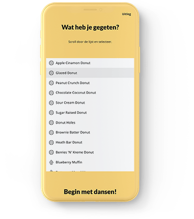
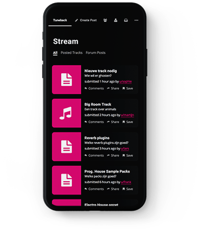

I'm a creative problem solver with a passion for coding and a fascination for psychology.
Currently studying Communication and Multimedia Design in Breda. Learn more about me.
Front-end web development projects made by using HTML, CSS and JavaScript.
A webdevelopment project build by combining multiple databasses.
A responsive webdevelopment project for giving and getting feedback.
Research projects focussed on getting qualitative insights of human behavior.
A research project on stress among young adults by designing cultural probes.
A research project on behavoir visualized to get qualitative insights.
A project that reflects on the relation between humans and technology.
I’m Lorenzo de Lijser, a Communication and Multimedia Design student from Breda. I love to solve creative problems.
I love to do research and visualize meaningful insights. I’m eager to learn new things and experiment with new technologies. I would like to gain more experience in web-development to bring designs and concepts to life.
In my free time, I like to manipulate sound-waves, twist a lot of knobs on soft-synths and create unique sounds.